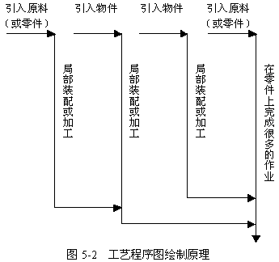

工艺程序图的绘制
工艺程序图通常
由表头和图形两部分组成，表头的格式和内容根据程序分析的任务而定。通常有：原材料、半成品编号、图号、程序说明、现行作业方法、日期、制表人、部门等。在图形部分，
整个生产过程的工序流程用垂线表示，原材料、零件(自制件、外购件)的进入用水平线表示，与垂线中途不能相交。
作图前先选择作业线上操作次数最多的零部件作为基准件。将该件的流程程序绘于图的最右侧，作为基准线，然后在顶端向左绘一条水平线表示，材料、零件进入作业线，以后按顺序绘制操作、检验符号。两符号之间的垂直线为

下面以开关转子为例来说明工艺程序图的绘制。
如图5-3所示的开关转子由轴①、停档②、及模压塑料体③三部分组成。它是经过对上述三个零件分别加工，最终装配构成。
轴的加工采用车削、铣削、检验及电镀等加工检验方法。停档的加工采用车削、磨削、检验、电镀等加工检验方法。模压塑料体的加工采用车削、钻削、铰削检验等加工检验方法。
根据工艺程序图绘制的方法及每个零件加工的工艺过程，形成图5-4所示的开关转子的工艺程序图。
通过开关转子的工艺程序图使我们知道：
(1) 工艺程序图上的垂直线表示工艺的流程，以主要零件作为工艺程序图的主要垂直线，操作、检验符号画在垂直线上，各种操作、检验符号之间用垂直短线连接。
(2) 工艺程序图上的水平线代表材料及零件的投入，引入线上应填写材料或零件规格、型号。
(3)在操作或检验符号的右边填写操作或检验的内容以及使用的工具或设备，在符号的左边记录操作时间。
(4)按照实际加工、装配的先后顺序，将操作与检验的符号分别编号1、2、3…，从上向下，自右至左，遇有水平线即转入下一个零件连续编号。编号写在符号内。
如果一件工作需分成几个部分去分别处理，这时由一个主要程序分成几个分程序。通常是将主要的分程序置于最右边，其余的依其重要性自右向左依次排列。例如电拖车检查及维修的工艺程序图，如图5-5所示。
在操作中，有时可能出现重复动作，为了便于记录，可使用省略符号“ ”的形式。
”的形式。
例如图5-6所示的箱盖钉钉子工艺程序图以及图5-7所示的钻孔及镀银工艺程序图。